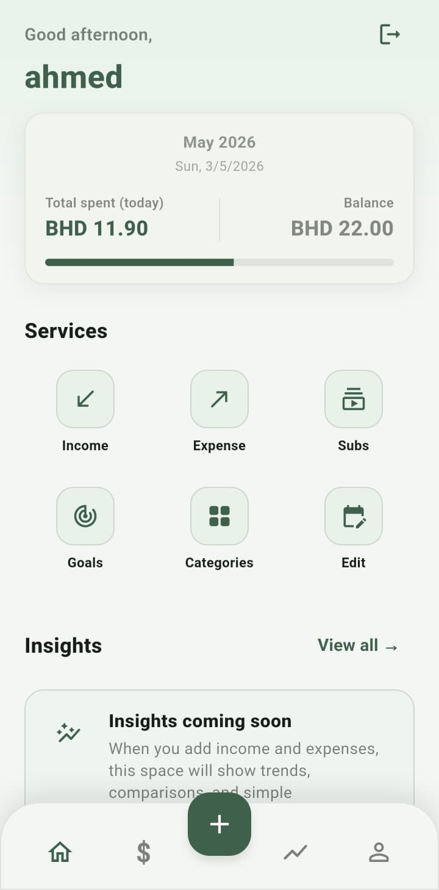
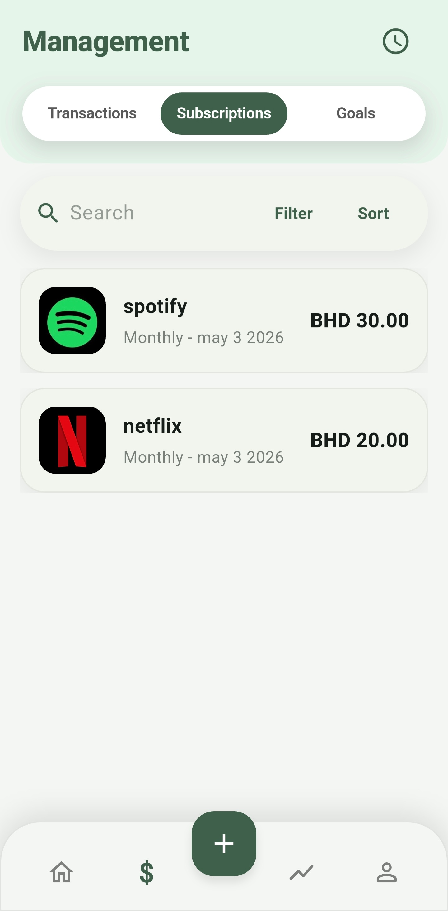
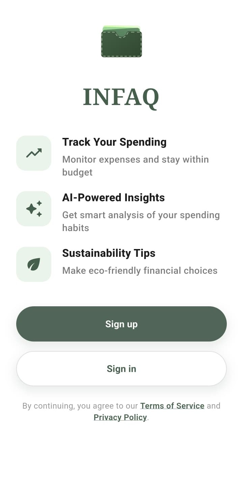
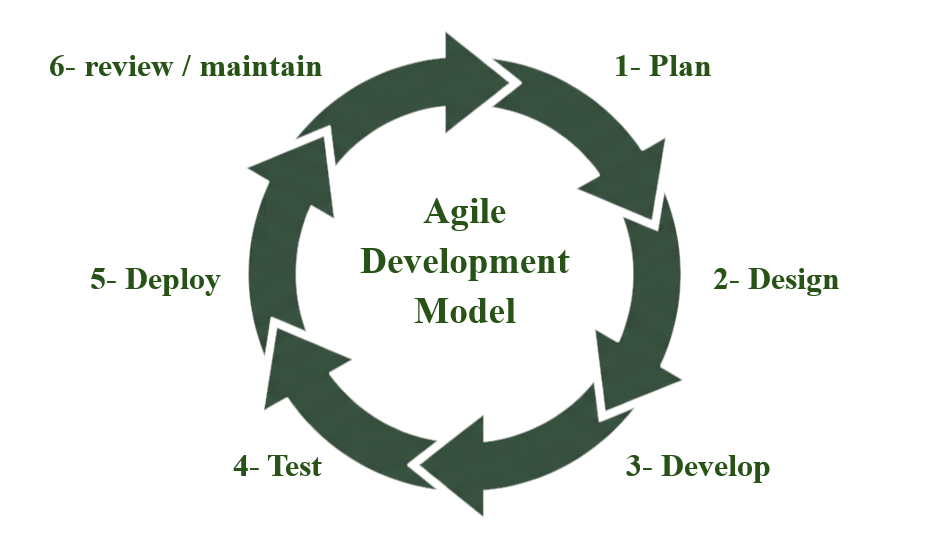
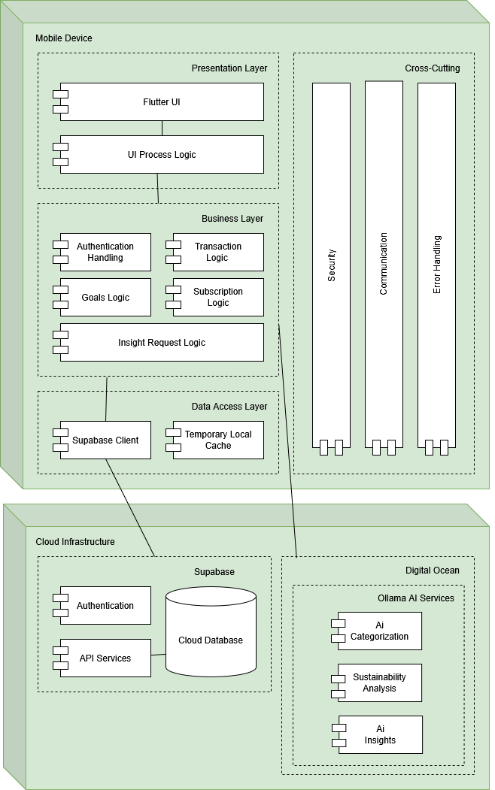

INFAQ: AI-Powered Personal Finance Management
Build better money habits today.
INFAQ is a smart personal finance management application designed to help users track expenses, manage budgets, understand spending habits, and receive AI-powered financial insights in a simple and user-friendly way.



Abstract
INFAQ is an AI-powered personal finance management application developed to help users manage their financial activities more effectively. The application focuses on simplifying expense tracking, improving spending awareness, supporting budget management, and generating intelligent insights based on user behavior. By combining a mobile application interface with cloud-based data storage and AI analysis, INFAQ provides users with a personalized and accessible way to understand their finances and make better spending decisions.
Project Objectives
The main objectives of INFAQ are focused on improving personal finance management through automation, intelligent analysis, and user-friendly design.
Track Expenses
Provide users with a simple way to record, organize, and view their daily expenses.
Improve Awareness
Help users understand their spending habits through summaries, categories, and reports.
Use AI Insights
Generate personalized financial insights and suggestions based on user spending behavior.
Support Budgeting
Allow users to set budgets, monitor progress, and manage financial goals more clearly.
Encourage Sustainability
Promote mindful spending by connecting personal finance decisions with sustainability awareness.
Build a User-Friendly App
Design a mobile application that is easy to use, visually clear, and suitable for everyday users.
Methodology
The development of INFAQ follows a structured process that includes research, design, implementation, testing, and evaluation.
Research
Studied personal finance challenges, existing finance apps, user needs, and AI-based financial management solutions.
Design
Designed the mobile app interface, database structure, authentication flow, and AI insight workflow.
Development
Built the application using Flutter, Supabase, FastAPI, Python, and AI tools for financial insight generation.
Testing
Tested usability, functionality, data handling, and the quality of generated financial insights.
Agile Project Lifecycle
INFAQ follows an Agile development lifecycle, allowing the project to be improved through repeated planning, design, development, testing, and feedback cycles.

Plan
Define requirements, project scope, features, and priorities.
Design
Create interface layouts, system structure, and database planning.
Develop
Implement app screens, backend services, database features, and AI logic.
Test
Check functionality, usability, performance, and AI response quality.
Deploy
Release the app to users and monitor initial usage.
Review
Collect feedback, identify improvements, and refine the application.
Project Purpose
INFAQ was developed to address the difficulty many users face in consistently tracking expenses and understanding their financial habits. The project aims to make personal finance management easier, smarter, and more accessible through automation, clear visual summaries, and AI-supported guidance.
Reduce Manual Effort
INFAQ simplifies the process of recording and organizing expenses, helping users spend less time managing financial data manually.
Improve Awareness
The app helps users understand where their money goes by presenting spending patterns, categories, and summaries in a clear way.
Support Better Decisions
Through intelligent insights, INFAQ helps users make more informed budgeting and spending decisions.
System Architecture
The architecture of INFAQ connects the mobile interface, backend services, database, and AI engine to provide a complete personal finance management system.

Frontend
Flutter mobile app used by the user to manage expenses, budgets, goals, and insights.
Backend API
FastAPI and Python handle server-side logic, AI requests, and communication between services.
Database & Authentication
Supabase and PostgreSQL manage user accounts, transactions, categories, and budgets.
AI Insight Engine
Ollama supports AI-powered financial insights, categorization, and personalized recommendations.
Tools and Technologies Used
The project uses a combination of tools for frontend development, backend services, database management, AI processing, deployment, design, and collaboration.
Frontend & UI Design

Flutter
Used to build the mobile application interface.
Dart
The programming language used for Flutter development.

Figma
Used for UI design, wireframes, and interface planning.
Backend & API

FastAPI
Used to create backend APIs and connect app logic with AI services.

Python
Used for backend logic, AI processing, and data handling.
DigitalOcean
Used for hosting backend services and deployment infrastructure.
Database & Authentication
Supabase
Used for authentication, database services, and user data management.

PostgreSQL
Used as the relational database system behind Supabase.
AI & Collaboration
Ollama
Used for local AI model testing and financial insight generation.

GitHub
Used for version control, collaboration, code management, and website publishing.
Key Features
INFAQ includes practical features that help users track, analyze, and improve their personal financial habits.
Automatically or manually organizes expenses into clear categories.
Allows users to set budgets and monitor progress over time.
Generates helpful financial suggestions based on user spending behavior.
Supports saving goals and encourages more mindful spending choices.
Demo and Project Presentation
This section provides access to the INFAQ application demo and project pitch videos.
App Demo
Main INFAQ application walkthrough showing core features and user flow.
English Pitch
Project pitch in English covering problem, solution, and impact.
Arabic Pitch
Project pitch in Arabic for local evaluators, students, and visitors.
Project Team
INFAQ was developed as a senior project by students from the University of Bahrain.
Dr. Amal Shaheen
Project Supervisor
Ahmed Abdulhasan
Student ID: 202205376
Mohammed Essam
Student ID: 202210718
Hasan Mahmood
Student ID: 202208051
Conclusion
INFAQ aims to provide a practical and intelligent solution for personal finance management by combining expense tracking, budgeting, AI-powered insights, and sustainability awareness. Through its mobile-first design and cloud-supported architecture, the project offers a foundation for a smarter and more personalized financial management experience. Future improvements may include deeper banking integration, advanced personalization, expanded analytics, and enhanced automation.